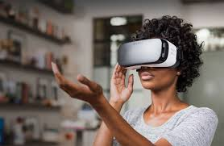
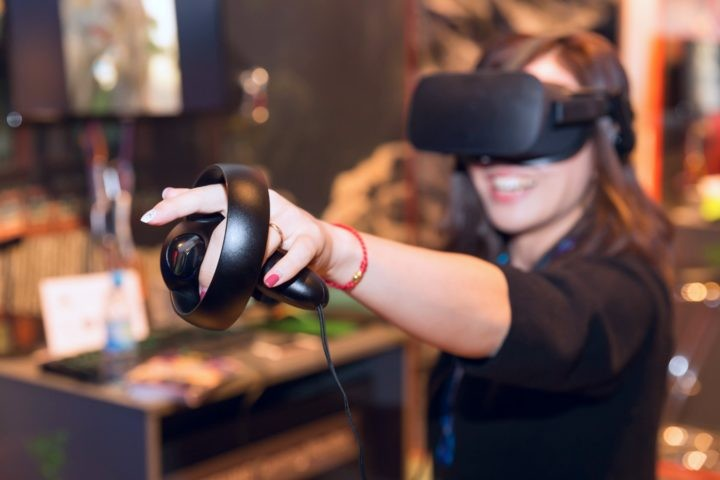
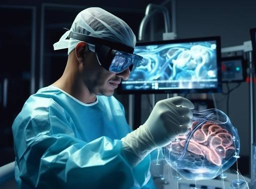
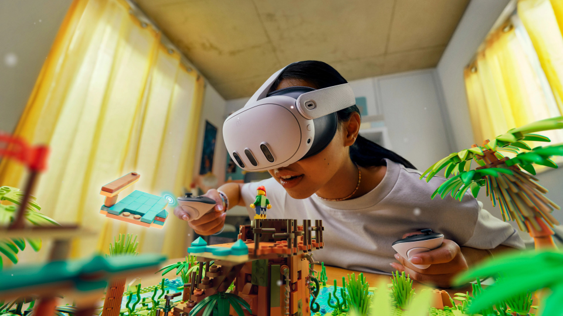

Virtuálna realita (VR) je prostredie vymodelované prostriedkami počítačovej simulácie, ktoré umožňujú interagovať s umelým trojrozmerným (3D) vizuálnym alebo iným zmyslovým prostredím. Aplikácie VR ponoria používateľa do počítačom generovaného prostredia, ktoré simuluje realitu pomocou interaktívnych zariadení, ktoré odosielajú a prijímajú informácie ako sú okuliare, náhlavné súpravy, rukavice alebo celotelové obleky. V typickom prípade si používateľ s VR headsetom so stereoskopickou obrazovkou prezerá animované obrázky simulovaného prostredia. Ilúziu „byť pri tom“ vyvolávajú pohybové senzory, ktoré zachytávajú pohyby používateľa a podľa toho prispôsobujú pohľad na obrazovke, zvyčajne v reálnom čase.
Najznámejšou a celosvetovo najpredávanejšou virtuálnou realitou (VR) je v súčasnosti Meta Quest 3. Ide o plne bezdrôtové samostatné zariadenie (all-in-one), ktoré na hranie nepotrebuje žiadne káble ani výkonný počítač.




Vnímavosť.Tento pojem označuje úroveň ponorenia do virtuálnej reality. Pôsobivosť určuje úroveň realizmu virtuálneho prostredia. Čím vyššia je úroveň imerzívnosti, tým väčší pocit prítomnosti vo svete používateľ pociťuje. Celková imerzívnosť sa dosahuje nielen prostredníctvom vysokokvalitných vizuálnych efektov, ale aj zvukových efektov a ovládačov.
Náhlavná súprava VR.Zariadenie alebo viacero zariadení (headset + ovládače), ktoré sa používajú na ponorenie sa do virtuálnej reality. Headset je zodpovedný za vizuálnu časť, zatiaľ čo ovládače pomáhajú pri interakcii s prostredím.
Sledovacie zariadenia.Ide o systém snímačov, ktorý sníma používateľa, jeho polohu v priestore a pomáha zachytávať pohyby na prenos do herného sveta. Trackery môžu byť integrované do náhlavnej súpravy alebo dodávané samostatne. Niektoré trackery sú nainštalované v rôznych rohoch miestnosti, aby sledovali pohyby hráča.
Foveated Rendering.Ide o samostatnú technológiu zodpovednú za spracovanie grafiky vo virtuálnom svete. Táto technológia zachytáva vysoké rozlíšenie a kvalitu obrazu len v tej časti virtuálneho sveta, kam smeruje pohľad hráča. Okrajové oblasti sa vykresľujú v nižšom rozlíšení. Táto technológia pomáha efektívnejšie spravovať systémové zdroje a poskytuje vysoký výkon bez toho, aby sa znížila kvalita a efekt pohltenia.
Scéna.Virtuálny priestor, v ktorom sa v danom okamihu odohráva všetka akcia. Scéna zahŕňa miesto, objekty, s ktorými hráč komunikuje, herné postavy a ďalšie prvky sveta.
Zorné pole alebo FOV. Označuje zorný uhol, ktorý hráč vidí. Čím väčší je uhol FOV, tým realistickejšie je ponorenie do virtuálneho sveta.
AR alebo rozšírená realita.Technológia, ktorá prekrýva digitálne prvky a objekty na objekty reálneho sveta. Technológia funguje vďaka kamere smartfónu alebo prídavnej náhlavnej súprave, ako je napríklad Apple Vision.
Mapovanie a lokalizácia.Táto technológia sa používa v odvetví AR. Je zodpovedná za vytvorenie mapy prostredia a priestoru a následné určenie polohy zariadenia používateľa (smartfónu) v priestore.
MR alebo zmiešaná realita.Ide o kombináciu dvoch technológií: VR + AR. V zmiešanej realite sa virtuálne prvky prekrývajú s reálnym svetom, ale môžu aj reagovať na jeho zmeny.